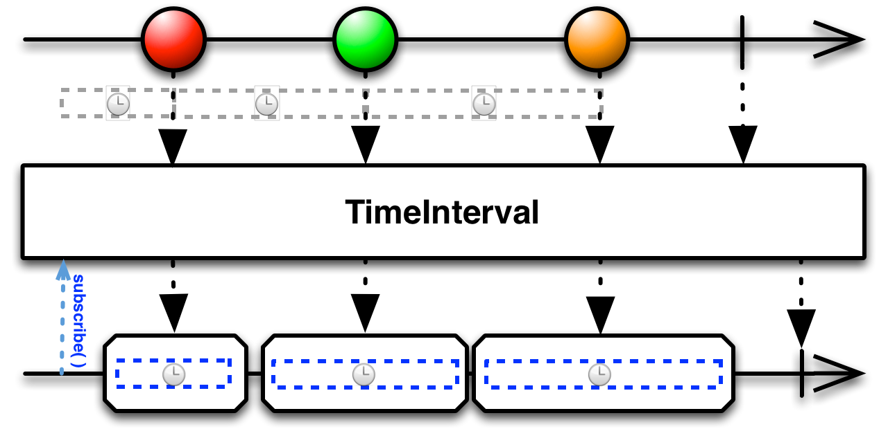

将一个发射数据的Observable转换为发射那些数据发射时间间隔的Observable

TimeInterval操作符拦截原始Observable发射的数据项，替换为发射表示相邻发射物时间间隔的对象。
RxJava中的实现为timeInterval，这个操作符将原始Observable转换为另一个Obserervable，后者发射一个标志替换前者的数据项，这个标志表示前者的两个连续发射物之间流逝的时间长度。新的Observable的第一个发射物表示的是在观察者订阅原始Observable到原始Observable发射它的第一项数据之间流逝的时间长度。不存在与原始Observable发射最后一项数据和发射onCompleted通知之间时长对应的发射物。
timeInterval默认在immediate调度器上执行，你可以通过传参数修改。